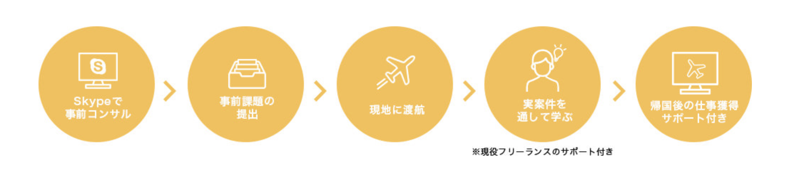

- プログラミングで
- 人生の安定を手にいれよう
- OSARA
- バンコクのノマドエンジニア講座
- オサラ
エンジニアとして、自由を手に入れるためには？
エンジニア需要の高まりに伴い
プログラミングスクールが増えています。
エンジニア需要の高まりに伴い
プログラミングスクールが増えています。
エンジニア需要の高まりに伴い
プログラミングスクールが「増えて」います。
ABOUT
ノマドエンジニア育成講座
「 稼ぐこと 」にフォーカスしたWebエンジニア育成講座です。
稼げるエンジニアに必要な５つのスキルとは？
-
基礎的な
プログラミングスキル -
案件獲得に必要な
営業力 -
見積もり作成から
納品までの知識 -
自分の付加価値を
高めるスキル -
フリーランス同士の
横のつながり

OSARAで「基本的なプログラミングスキル」は教えません
基礎的なプログラミングスキルは無料で学べる時代。
OSARAでは、基礎知識学習は事前課題とチャットサポートのみ。
STEP.1
【バンコク渡航前１ヶ月】
事前課題で基礎知識を学ぶ
STEP.2
【バンコク渡航前１ヶ月】
事前課題で基礎知識を学ぶ
STEP.3
【バンコク渡航前１ヶ月】
事前課題で基礎知識を学ぶ
スキルアップしてもフリーランスエンジニアとして食べていくことは難しい。
フリーランスにはプログラミングスキル以外が大切。
OSARA[オサラ]で学べること
OSARAの学習では、エンジニアとして「稼ぐ」ために必要な能力を身につけます。
-
案件獲得に
必要な営業力 -
見積もり作成から
納品までの知識 -
自分の付加価値を
高めるスキル -
フリーランス同士の
横のつながり
これらを教えるのがOSARAです。
他のプログラミングスクールとここが違う！
OSARA[オサラ]の３つのメリット

現役フリーランスから学べる
他のプログラミングスクールとは違い、 実際にフリーランスとして活動しているエンジニアが 直接講師を勤めます。
実践を通じて学べる
他のプログラミングスクールとは違い、 実際にフリーランスとして活動しているエンジニアが 直接講師を勤めます。
授業料が実質０円
他のプログラミングスクールとは違い、 実際にフリーランスとして活動しているエンジニアが 直接講師を勤めます。
さらに！帰国後もサポート付き
リモートワーカーのチームを作ることで受注率、 受注単価が大幅に向上します.
OSARAは講座が終わって終了ではありません。
参加メンバーのチャットグループを作り、 帰国後も継続的に案件参加できるようになります。
また、チームで働くことで継続的に稼ぎやすい仕組みづくりも構築しております。
事前課題ができない人はお断りしております。iSaraでは、無料で学べるプログラミング基礎知識は教えません。
事前課題一覧はメールで送りつつ、
チャットサポートのみ。従って、本気で取り組まないと結果は出ません。
創業メンバー
実際にフリーランスとして活躍しているエンジニアが立ち上げました
フリーランス講師1
山田 花子
ISARA (THAILAND) CO.,LTD.の代表です。学生起業の後にリクルートへ就職、 その後独立し、海外移住しました。今はフリーランスとしてリモートワークで日本円を稼ぎ、 外国通貨に変えて使い、海外を旅してます。営業、ブログPVアップ(最高月間150万PV)、 ビジネス構築が専門です。
フリーランス講師2
山田 花子
ISARA (THAILAND) CO.,LTD.の代表です。学生起業の後にリクルートへ就職、 その後独立し、海外移住しました。今はフリーランスとしてリモートワークで日本円を稼ぎ、 外国通貨に変えて使い、海外を旅してます。営業、ブログPVアップ(最高月間150万PV)、 ビジネス構築が専門です。
フリーランス講師3
山田 花子
ISARA (THAILAND) CO.,LTD.の代表です。学生起業の後にリクルートへ就職、 その後独立し、海外移住しました。今はフリーランスとしてリモートワークで日本円を稼ぎ、 外国通貨に変えて使い、海外を旅してます。営業、ブログPVアップ(最高月間150万PV)、 ビジネス構築が専門です。
フリーランス講師4
山田 花子
ISARA (THAILAND) CO.,LTD.の代表です。学生起業の後にリクルートへ就職、 その後独立し、海外移住しました。今はフリーランスとしてリモートワークで日本円を稼ぎ、 外国通貨に変えて使い、海外を旅してます。営業、ブログPVアップ(最高月間150万PV)、 ビジネス構築が専門です。
Q&A
ノマドエンジニアとして自由に稼ぐことは
「 本当に 」可能なのか？
実現可能です
その証拠に第三者の声を聞いてみました。
＊実際にフリーランスエンジニアを採用する企業様から、 メッセージをいただきました。

リモートワークという言葉がありますが、弊社では何も気にしません。 エンジニアに求めるのは、快適なコミュニケーションと信頼と成果物のみ。
Kredo IT Abroad . Inc 代表取締役 山田 花子
リモートワークという言葉がありますが、弊社では何も気にしません。 エンジニアに求めるのは、快適なコミュニケーションと信頼と成果物のみ。
Kredo IT Abroad . Inc 代表取締役 山田 花子
リモートワークという言葉がありますが、弊社では何も気にしません。 エンジニアに求めるのは、快適なコミュニケーションと信頼と成果物のみ。
Kredo IT Abroad . Inc 代表取締役 山田 花子
OSARA[オサラ]で学べる内容
渡航前の事前課題と渡航中に学べることの一覧です。
渡航前の事前学習
- ０から始めるプログラミング事前学習講座
- 参加者グループコミュニティ
- ０から始めるプログラミング事前学習講座
- 参加者グループコミュニティ
- ０から始めるプログラミング事前学習講座
- 参加者グループコミュニティ
- ０から始めるプログラミング事前学習講座
- 参加者グループコミュニティ
- ０から始めるプログラミング事前学習講座
- 参加者グループコミュニティ
バンコク渡航中
- フリーランス独立術講座
- 実際の実務案件をこなす
- フリーランス独立術講座
- 実際の実務案件をこなす
- フリーランス独立術講座
- 実際の実務案件をこなす
講座費用258,000円以上の金額が稼げるまで「永久サポート延長」します。
つまりリスク０で参加できます。
受講の流れ
Skypeで
事前コンサル
現在のスキルの状況、パソコンの環境説明、渡航での注意点を話します。
簡単なテストあり
iSaraでは受講料を稼げることを保障しています。従って、事前コンサル時点で簡単なテストを実施し、 場合によってはお断りをしております。（テストの内容はPCの基礎知識に関するテストですので、普段からパソコンを利用する方でしたら問題ありません。 テストはもちろん無料ですので、まずはお問い合わせください。）
Skypeで
事前コンサル
現在のスキルの状況、パソコンの環境説明、渡航での注意点を話します。
簡単なテストあり
iSaraでは受講料を稼げることを保障しています。従って、事前コンサル時点で簡単なテストを実施し、 場合によってはお断りをしております。（テストの内容はPCの基礎知識に関するテストですので、普段からパソコンを利用する方でしたら問題ありません。 テストはもちろん無料ですので、まずはお問い合わせください。）
Skypeで
事前コンサル
現在のスキルの状況、パソコンの環境説明、渡航での注意点を話します。
簡単なテストあり
iSaraでは受講料を稼げることを保障しています。従って、事前コンサル時点で簡単なテストを実施し、 場合によってはお断りをしております。（テストの内容はPCの基礎知識に関するテストですので、普段からパソコンを利用する方でしたら問題ありません。 テストはもちろん無料ですので、まずはお問い合わせください。）
Skypeで
事前コンサル
現在のスキルの状況、パソコンの環境説明、渡航での注意点を話します。
簡単なテストあり
iSaraでは受講料を稼げることを保障しています。従って、事前コンサル時点で簡単なテストを実施し、 場合によってはお断りをしております。（テストの内容はPCの基礎知識に関するテストですので、普段からパソコンを利用する方でしたら問題ありません。 テストはもちろん無料ですので、まずはお問い合わせください。）
Skypeで
事前コンサル
現在のスキルの状況、パソコンの環境説明、渡航での注意点を話します。
簡単なテストあり
iSaraでは受講料を稼げることを保障しています。従って、事前コンサル時点で簡単なテストを実施し、 場合によってはお断りをしております。（テストの内容はPCの基礎知識に関するテストですので、普段からパソコンを利用する方でしたら問題ありません。 テストはもちろん無料ですので、まずはお問い合わせください。）
なぜバンコクなのか？
ここまで見ると、iSaraは日本でも実施可能に見えます。
しかし、バンコクを選んだのには理由があります。
・プログラミングフリーランスの最先端
・水準は日本と同じなのに、生活費が安い（毎月８万円ほど）
・昼、夜共に遊びが充実（稼ぐモチベーションアップと息抜きにGOOD）
・日本人が住みやすい（食事が美味しい / 気候が良い / 親日である）
環境が大切。さらにこの価格が実現できるのが、バンコクなのです。
OSARA受講生への参加特典
講座費用258,000円以上の金額が稼げるまでの「永久サポート延長」を追加します。つまり、実質０円です。
OSARAは『実質０円』！更なる特典もあります。
特典１
講座費用258,000円以上の金額が稼げるまで、 「永久サポート延長」。リスク０で参加できます。
特典2
講座費用258,000円以上の金額が稼げるまで、 「永久サポート延長」。リスク０で参加できます。
特典3
講座費用258,000円以上の金額が稼げるまで、 「永久サポート延長」。リスク０で参加できます。
OSARAはボランティアではありません
ここまでみると、実質０円で各種サポートもある、特典が多すぎて逆に怪しい。
そう思われるかもしれません。
しかし、OSARAが目指すことは異なります。
月１０万円稼げるエンジニアを輩出し続ける。
最大の価値がこれです。
OSARAの卒業生が稼ぎ続けることで、小さな経済が動き始めます。
ここに最大の価値があり、この講座はその序章にすぎません。
創業者からのメッセージ
「一生もののスキル」を身につけ、ノマドライフを楽しもう！
初めまして。「iSara（イサラ）」創業者の染谷佳佑と申します。
iSaraの開講は、僕達講師陣にとってもとても大きな挑戦です。 今回、参加者に圧倒的な価値提供をするために、超少人数制だからできる内容を用意しました。
・「Webエンジニアとして稼ぐ」に特化した超実践的カリキュラム
・フリーランスとして生計を立て、いつでも世界中を旅できるスキル、収入のある講師陣のみを厳選
・講座参加者が25万8,000円の参加費以上を稼ぐまでの無期限サポート延長
ここまでのカリキュラムを備えた講座は、世界で唯一iSaraだけでしょう。 iSaraでプログラミングや営業を学ぶことで、 「一生ものの潰しが効くスキル」が身につきます。 もちろん勉強だけでなく、バンコクを楽しめるプログラムも用意しています！
３ヶ月間徹底的にサポートします。ぜひバンコクでお会いしましょう。
資料請求フォーム
まずは無料で資料請求からどうぞ。
よくある質問
-
プログラミングスキルは必要ですか？
いいえ、必要ありません。しかし、iSaraでは参加費以上の金額が稼げることを保障しています。 従って、事前通話面談時点で簡単なテストを実施し、場合によってはお断りをしております。この点だけはご了承ください。
-
参加費以上に稼げなかったらどうなりますか？
いいえ、必要ありません。しかし、iSaraでは参加費以上の金額が稼げることを保障しています。 従って、事前通話面談時点で簡単なテストを実施し、場合によってはお断りをしております。この点だけはご了承ください。
-
プログラミングスキルは必要ですか？
いいえ、必要ありません。しかし、iSaraでは参加費以上の金額が稼げることを保障しています。 従って、事前通話面談時点で簡単なテストを実施し、場合によってはお断りをしております。この点だけはご了承ください。
-
プログラミングスキルは必要ですか？
いいえ、必要ありません。しかし、iSaraでは参加費以上の金額が稼げることを保障しています。 従って、事前通話面談時点で簡単なテストを実施し、場合によってはお断りをしております。この点だけはご了承ください。
-
プログラミングスキルは必要ですか？
いいえ、必要ありません。しかし、iSaraでは参加費以上の金額が稼げることを保障しています。 従って、事前通話面談時点で簡単なテストを実施し、場合によってはお断りをしております。この点だけはご了承ください。